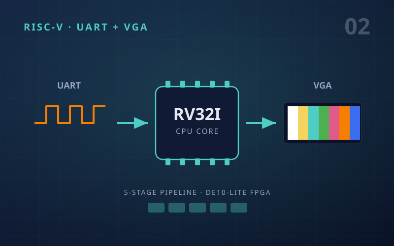
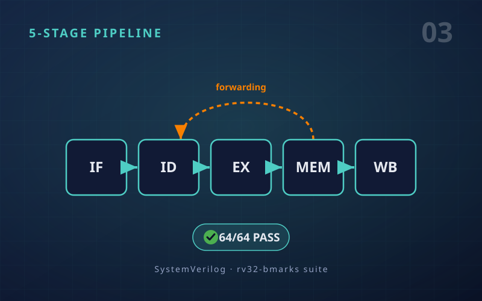
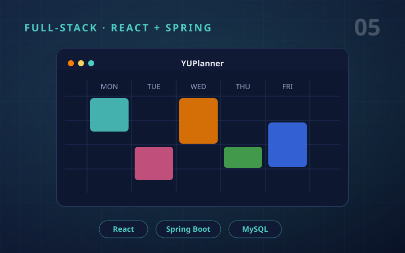

Wearable ECG Holter Monitor
Wearable ESP32 + AD8232 node that streams real-time ECG over Wi-Fi through an 8-stage DSP pipeline to a live browser dashboard.
- ESP32
- Django Channels
- SciPy
- Chart.js

Computer Engineer with experience in system-level design, embedded and digital hardware, and software development. Focused on building clear, maintainable, and performance-driven solutions.
About
I'm Salwan Aldhahab, a Computer Engineer who gets fired up by building across every layer of the stack.
I thrive in the space between transistors and applications, circuits and code — chasing problems wherever they lead, whether the answer lives in hardware or software.
What excites me most is co-design: that spark when a firmware choice reshapes the silicon, and a silicon constraint rewrites the code. It's where I do my best work.
I hold a Specialized Honours BEng in Computer Engineering from York University — and I'm just getting started. To me, engineering isn't about what you already know; it's about how fast and how eagerly you learn what you don't.
Specialized Honours BEng
Computer Engineering · York University
Hardware
RTL · FPGA · ASIC · embedded
Software
Full-stack · DSP · systems
Projects
Wearable ESP32 + AD8232 node that streams real-time ECG over Wi-Fi through an 8-stage DSP pipeline to a live browser dashboard.

Custom RV32I CPU on the DE10-Lite FPGA — instructions streamed over UART through a 5-stage pipeline with valid/flush handshakes, register state on VGA.

Five-stage RV32I core in SystemVerilog with a forwarding/stall/flush hazard unit — verified across the full rv32-bmarks suite (64/64 pass).

Complete Cadence ASIC flow for a bit-slice 32-bit ALU on GPDK045 45 nm — RTL, synthesis, place-and-route, signoff and pad-frame integration.

Three-tier academic planner — React SPA + Spring Boot REST API + MySQL — with course scheduling, professor ratings and PDF export across student/professor/advisor roles.
Contact
Email: salwan.aldhahab@gmail.com
LinkedIn: linkedin.com/in/salwan-aldhahab
GitHub: github.com/salwan-aldhahab